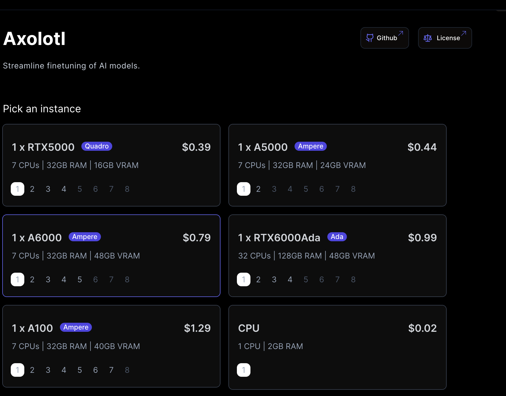
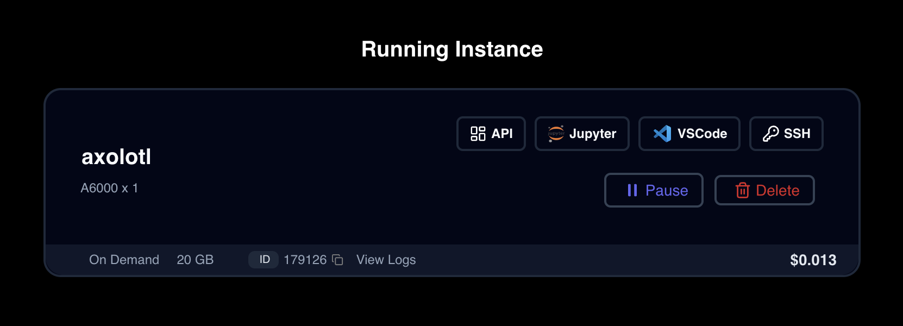
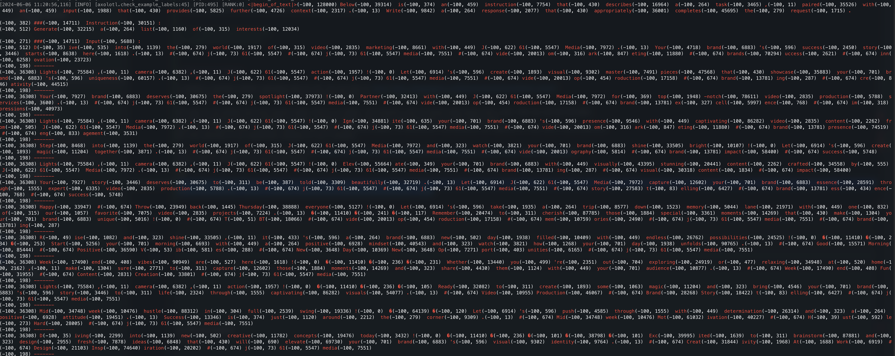
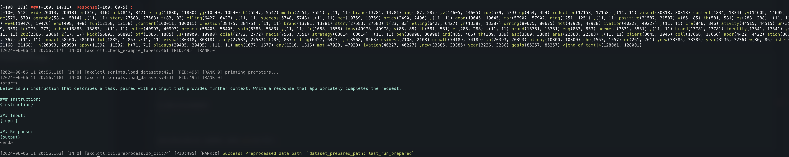
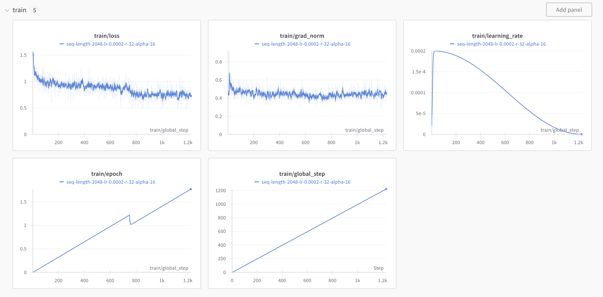
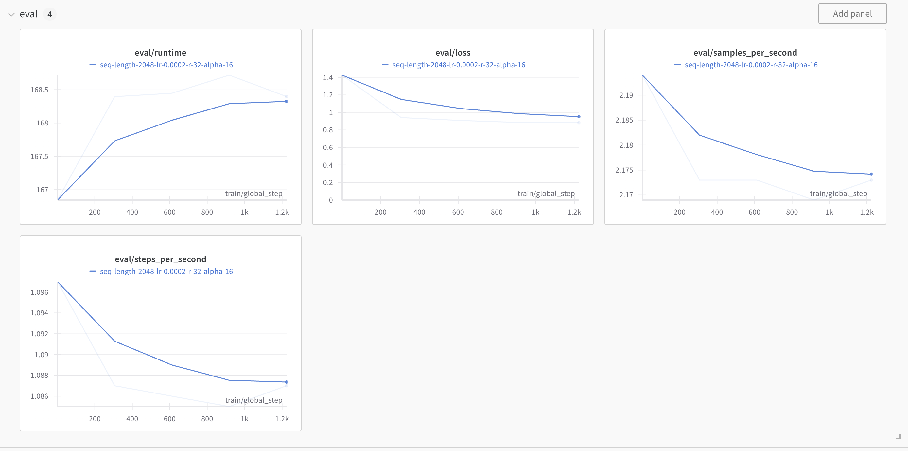

Intro
I’m currently taking part in the course/conference Mastering LLMs: A Conference For Developers & Data Scientists. It started off as a fine-tuning course and then kind of exploded into a mini conference with numerous speakers and talks on LLMs. Many of the organizations involved gave out free credits to try out their platform. Vishnu was very generous and gave out some free credits for JarvisLabs.ai.
I previously wrote about my first time using axolotl here for text completion (not instruction). In this post I will be going through fine-tuning an instruction model with axolotl on JarvisLabs.ai.
JarvisLabs Setup
- JarvisLabs is a cloud provider for GPUs.
- The docs are great.
- They even have templates for getting up and running quickly. I am using the axolotl template.
When you create an instance, you can easily use Jupyter or the terminal directly in the browser.
 
You can also ssh in from a local terminal which is what I prefer to do.
I created an ssh key on my local machine:
ssh-keygen -t ed25519 -C "<my_email.com>" -f ~/.ssh/jarivs_labscat ~/.ssh/jarivs_labs.pubI copied it into the JarvisLabs ssh settings as explained in their FAQ.
Note that the ssh details can be seen by clicking on the ssh button on the running instance. They may be slightly different from this particular example.
ssh -i ~/.ssh/jarivs_labs -o StrictHostKeyChecking=no -p 11314 root@sshf.jarvislabs.aiOnce connected, these are the commands I run to set up the environment:
cd /workspace/axolotl/
git pullThen from axolotl readme.
pip3 install packaging ninja
pip3 install -e '.[flash-attn,deepspeed]'I also find it useful to define these:
git config --global credential.helper store
export HF_DATASETS_CACHE="/workspace/data/huggingface-cache/datasets"
export HUGGINGFACE_HUB_CACHE="/workspace/data/huggingface-cache/hub"
export TRANSFORMERS_CACHE="/workspace/data/huggingface-cache/hub"
export HF_HOME="/workspace/data/huggingface-cache/hub"
export HF_HUB_ENABLE_HF_TRANSFER="1"Connect wandb and huggingface-cli.
wandb login
huggingface-cli loginAxolotl Config
This is the axolotl config which I made edits to and stored at examples/llama-3/qlora.yml.
base_model: meta-llama/Meta-Llama-3-8B
model_type: AutoModelForCausalLM
tokenizer_type: AutoTokenizer
load_in_8bit: false
load_in_4bit: true
strict: false
datasets:
- path: data.jsonl
type: alpaca
dataset_prepared_path:
val_set_size: 0.05
output_dir: qlora-test
sequence_len: 2048
sample_packing: true
eval_sample_packing: False
pad_to_sequence_len: true
adapter: qlora
lora_r: 32
lora_alpha: 16
lora_dropout: 0.05
lora_target_modules:
lora_target_linear: true
lora_fan_in_fan_out:
wandb_project: synthetic-social-llama3
wandb_entity:
wandb_watch:
wandb_name: seq-length-2048-lr-0.0002-r-32-alpha-16
wandb_log_model:
gradient_accumulation_steps: 4
micro_batch_size: 2
num_epochs: 2
optimizer: paged_adamw_32bit
lr_scheduler: cosine
learning_rate: 0.0002
train_on_inputs: false
group_by_length: false
bf16: auto
fp16:
tf32: false
gradient_checkpointing: true
early_stopping_patience:
resume_from_checkpoint:
local_rank:
logging_steps: 1
xformers_attention:
flash_attention: true
warmup_steps: 10
evals_per_epoch: 2
eval_table_size:
saves_per_epoch: 1
debug:
deepspeed:
weight_decay: 0.0
fsdp:
fsdp_config:
special_tokens:
pad_token: "<|end_of_text|>"
I simply copy/pasted the above into the existing yaml from the repo.
rm -rf examples/llama-3/qlora.yml
vim examples/llama-3/qlora.ymlPreparing and Debugging the Processed Dataset
I created a synthetic dataset generated with another LLM. Both the inputs and labels are synthetic and generated with an LLM. You can find it here. It’s just meant for simple experimentation and playing around. I stored it as a data.jsonl file on the JarvisLabs instance at /workspace/axolotl/data.jsonl.
The idea of this dataset and fine-tuning a model from it is simple. You provide a list of social media posts from a user. Then you can ask the model to either generate a list of interests/keywords or write a summary based on the input posts. Note that this is a very simple task which can be achieved with existing closed or open source instruction models. So technically fine-tuning is not required for this task in most scenarios. But this exercise is for educational purposes so let’s continue.
We process the dataset as recommended by the axolotl docs. My dataset is in the alpaca format.
rm -rf last_run_prepared/
CUDA_VISIBLE_DEVICES="" python -m axolotl.cli.preprocess examples/llama-3/qlora.yml --debug 
This screenshot shows the output of the dataset preprocess step when running in --debug mode. The red tokens are not included in the loss calculation and the green ones are. This is because we are using train_on_inputs: false. This means the training does not consider the user submitted inputs when calculating the loss.
The processed dataset is in the default last_run_prepared folder because I did not specify a different location in the yaml configuration. We can debug the pre-processed dataset more in the ipython shell.
from transformers import AutoTokenizer
from datasets import load_from_disk
import yaml
directory = !ls last_run_prepared/
with open('examples/llama-3/qlora.yml', 'r') as f:
cfg = yaml.safe_load(f)
model_id = cfg['base_model']
tokenizer = AutoTokenizer.from_pretrained(model_id)
ds = load_from_disk(f'last_run_prepared/{directory[0]}/')
row = ds[4552] # can pick various rows to test
print(tokenizer.decode(row['input_ids']))Here is an example record in full where the task is to generate a list of interests:
<|begin_of_text|>Below is an instruction that describes a task, paired with an input that provides further context. Write a response that appropriately completes the request.
### Instruction:
Generate a list of interests
### Input:
Exploring architectural wonders: Casa Malaparte on the Isle of Capri, Italy. Designed by Adalberto Libera in 1937. A true masterpiece of modernist architecture. #casamalaparte #adalbertolibera #architecturalwonders
-------
Vintage charm: The Miller House in Lexington, Kentucky, designed by José Oubrerie in the 1980s. A unique blend of contemporary design and historic influences. #millerhouse #joseoubrerie #vintagecharm
-------
A glimpse into the past: The Eames House in Pacific Palisades, California, 1949. A landmark of mid-century modern architecture and a symbol of creativity and innovation. #eameshouse #midcenturymodern #designinspiration
-------
Architectural serenity: The Bruder Klaus Field Chapel in Mechernich, Germany, designed by Peter Zumthor in 2007. A place of contemplation and spiritual connection with nature. #bruderklausfieldchapel #peterzumthor #architecturalserenity
-------
The poetic beauty of Casa Gilardi in Mexico City, Mexico, designed by Luis Barragán. Every corner of this house is a work of art that celebrates light, color, and form. #casagilardi #luisbarragan #poeticbeauty
-------
Rediscovering architectural gems: The Lovell Beach House in Newport Beach, California, 1926. A pioneering example of modern residential architecture by Rudolph Schindler. #lovellbeachhouse #rudolphschindler #architecturalgems
-------
Minimalist elegance: The Mies van der Rohe Pavilion in Barcelona, Spain. An iconic modernist structure that exemplifies the essence of simplicity and sophistication in design. #miesvanderrohe #minimalistelegance #barcelonapavilion
-------
Sustainable design spotlight: The Adam Joseph Lewis Center in Oberlin, Ohio, designed by William McDonough in 2000. A visionary example of environmentally conscious architecture. #adamjosephlewiscenter #williammcdonough #sustainabledesign
-------
Architectural harmony: Fallingwater in Pennsylvania, designed by Frank Lloyd Wright in 1935. A masterpiece that seamlessly integrates with its natural surroundings. #fallingwater #franklloydwright #architecturalharmony
-------
The ethereal grace of the Teshima Art Museum in Japan, designed by Ryue Nishizawa in 2010. A place where architecture, art, and nature converge to create a transcendent experience. #teshimaartmuseum #ryuenishizawa #etherealgrace
-------
Unveiling design treasures: The Unité d'Habitation in Marseille, France, designed by Le Corbusier in the 1950s. A revolutionary housing complex that redefined urban living concepts. #unitehabitation #lecorbusier #designtreasures
-------
Cultural heritage in focus: The Sheikh Lotfollah Mosque in Isfahan, Iran, a masterpiece of Safavid architecture from the 17th century. A symbol of intricate beauty and Islamic artistry. #sheikhlotfollahmosque #isfahan #culturalheritage
-------
Architectural splendor: The Elbphilharmonie in Hamburg, Germany, designed by Herzog & de Meuron. A modern marvel that harmoniously combines old and new architectural elements. #elbphilharmonie #herzogdemeuron #architecturalsplendor
-------
Exploring urban landscapes: The Metropol Parasol in Seville, Spain, affectionately known as 'The Mushrooms.' A contemporary architectural marvel that transforms public spaces with innovative design. #metropolparasol #seville #urbanlandscapes
-------
Enchanting design: The Biblioteca Vasconcelos in Mexico City, a cultural institution with a breathtaking blend of contemporary architecture and artistic expression. #bibliotecavasconcelos #mexicocity #enchantingdesign
-------
Architectural evolution: The High Line in New York City, a groundbreaking urban park built on a historic elevated rail line. A symbol of innovative adaptive reuse in contemporary architecture. #highline #newyorkcity #architecturalevolution
-------
Timeless elegance: The Kimbell Art Museum in Fort Worth, Texas, designed by Louis Kahn in the 1970s. A space where architecture serves as a silent partner to art, creating a harmonious environment. #kimbellartmuseum #louiskahn #timelesselegance
-------
Architectural symmetry: The Pantheon in Rome, Italy, a marvel of ancient Roman engineering and design. A timeless masterpiece that continues to inspire architects and visitors alike. #pantheon #rome #architecturalsymmetry
-------
Designing with nature: The Salk Institute in La Jolla, California, designed by Louis Kahn. A sanctuary of research and contemplation where architecture and landscape coexist in perfect harmony. #salkinstitute #louiskahn #designwithnature
-------
Iconic modernism: The Farnsworth House in Plano, Illinois, designed by Mies van der Rohe in 1951. A glass pavilion that blurs the line between interior and exterior, embodying the essence of modernist design. #farnsworthhouse #miesvanderrohe #iconicmodernism
-------
Exploring the architectural masterpiece that is the Casa Malaparte in Capri, Italy. Designed by Curzio Malaparte in 1937. 🏛️ #casamalaparte #curziomalaparte #italianarchitecture
-------
Capturing the essence of mid-century modern design at the iconic Stahl House (Case Study House #22) in Los Angeles by architect Pierre Koenig. 🌟 #stahlhouse #casestudyhouse #midcenturymodern
-------
A glimpse of the minimalist beauty of the Teshima Art Museum on the island of Teshima, Japan. Designed by Ryue Nishizawa and Rei Naito in 2010. 🎨 #teshimaartmuseum #japanesearchitecture
-------
Vintage vibes at the Sheats-Goldstein Residence in Beverly Hills, a landmark of organic architecture designed by John Lautner in 1963. 🌿 #sheatsgoldsteinresidence #johnlautner #organicarchitecture
-------
Step inside the breathtaking geometric wonderland of the Salk Institute in La Jolla, California, designed by Louis Kahn. A true architectural marvel! 🔷 #salkinstitute #louiskahn #geometricarchitecture
-------
Reflecting on the enchanting play of light and shadows at the Naoshima Bath ''I♥湯 (I Love Yu)'' in Japan, designed by artist Shinro Ohtake. 🛁 #naoshimabath #shinroohtake #artinstallation
-------
An homage to the timeless elegance of Greta Magnusson Grossman's Grasshopper Floor Lamp, an icon of modern design from the mid-20th century. 🦗💡 #grasshopperlamp #gretamagnussongrossman #modernlighting
-------
Discovering the organic forms and natural materials of the Bavinger House in Norman, Oklahoma, a visionary creation by architect Bruce Goff in 1955. 🌿 #bavingerhouse #brucegoff #organicarchitecture
### Response:
architecture,architectural wonders,design,mid-century modern,modernist,contemporary design,historic influences,sustainable design,urban architecture,natural elements,cultural heritage,minimalist elegance,architectural harmony,artistic expression,architectural evolution,symmetry,organic architecture,iconic modernism,timeless elegance,geometric architecture,light and shadows,play of light,natural materials,innovative design,architectural splendor,aesthetic,architecture and nature,architectural gems,spiritual connection,sustainable architecture,artistic beauty,innovative architecture,creative design,historical architecture,urban landscapes,design treasures,aesthetic appeal,architectural marvels,pioneering architecture,visual beauty<|end_of_text|>When we look at the row['labels'] we can see many of the entries are -100. This means we will ignore these outputs when doing the loss calculation during training.
You can decode just the output of row['labels'] where the token is not -100.
print(tokenizer.decode([r for r in row['labels'] if r != -100]))This returns just the output of the record after ### Response:. You can also do some sanity checks to make sure the input tokens and label tokens match up:
for input_token, output_token in zip(row['input_ids'], row['labels']):
if output_token != -100:
print(input_token, output_token)
assert input_token == output_tokenDuring training the output tokens will be right shifted so that the model learns to predict the next token.
It’s really important to look through the data to make sure everything lines up and there are no weird tokenization errors. Here is another example training record of the type where the instruction says to generate a summary.
row = ds[3684] # can pick various rows to test
print(tokenizer.decode(row['input_ids']))<|begin_of_text|>Below is an instruction that describes a task, paired with an input that provides further context. Write a response that appropriately completes the request.
### Instruction:
Generate a summary.
### Input:
Chasing waves and sunsets, living for the moments that take your breath away 🌅🌊🏄 #sunsetchasers
-------
The ocean is my therapist, saltwater my remedy, surfing my meditation 🌊🧘🙏 #surftherapy
-------
Salty hair, sandy toes, and endless waves - this is where I belong 🏄🌊🌞 #oceanchild
-------
Dancing with the waves under the golden sun, feeling alive and free 🌞🌊💃 #soulfulsurfing
-------
Surfing is not just a sport, it's a way of life - a journey of self-discovery and pure joy 🏄🌺🌟 #surferforlife
-------
Beneath the surface of the ocean, I find serenity and a connection to something greater 🌊🧜♀️🌌 #deepblue
-------
Riding the rhythm of the waves, each crest and trough a heartbeat of nature's symphony 🏄🎶🌊 #harmony
-------
Sun-kissed and salt-soaked, my happy place is where the sea meets the shore 🌞🏖️🌊 #beachlife
-------
In the dance between surfboard and wave, I find grace, balance, and pure exhilaration 🏄💫🌊 #flowstate
-------
Sandy cheeks, gleaming smiles, and endless laughter - the perfect day by the sea 🌊😁🏖️ #goodvibesonly
-------
Let the waves carry you to new horizons, where the possibilities are as vast as the ocean itself 🌊🌅🚣 #exploreandflow
-------
Surfing at dawn, greeted by the rising sun and the promise of a day filled with adventure 🏄🌅☀️ #earlymorningmagic
-------
Saltwater runs through my veins, adventure in my heart, and the spirit of the sea in my soul 🌊❤️🌞 #oceanvibes
-------
Among the waves, I find clarity, purpose, and a sense of belonging that words cannot capture 🏄🌊🌌 #surfingbliss
-------
Every wave tells a story, and I am just a chapter in the never-ending narrative of the sea 📖🌊🏄 #saltystories
-------
Breathing in the salty air, feeling the energy of the ocean, and being present in every moment 🌊🌬️🙏 #mindfulsurfing
-------
From dawn 'til dusk, chasing waves and memories that will last a lifetime 🏄🌄🌌 #adventureseeker
-------
The thrill of the drop, the rush of the ride, and the sheer joy of being one with the ocean 🌊🏄😄 #surfingbliss
-------
Where the sea meets the sky, I find freedom, peace, and a sense of infinite possibility 🌊☁️🌈 #limitless
-------
Morning vibes with a cup of @rockstarenergy to kickstart the day 🌞☕️
-------
Chasing waves in Bali with @rockstarenergy 🏄🌊 #SurfLife
-------
Shredding through Indo tunnels with a unique 5'2 board shaped by @mike_andrews3 🏄🌪 #SurfingAdventures
-------
Panama jumps with style in my favorite @hurley gear 🌴📸 #SurfingParadise
-------
Excited to be part of the new series by @hurley featuring some rad surfers 🤙🌊 #Stoked
-------
GoPro footage of an epic wave session posted by @stab and @hurley 📽️🌊 #WaveRider
-------
Sunset session at Lower Trestles with @rockstarenergy 🌅🏄♂️ #SurfSunRepeat
-------
Celebrating my little girl's moment of fame with joy and pride ❤️🌟 #ProudDad
-------
Revamped a surfboard design for @parkercoffin with a fiery twist 🔥🏄 #UniqueBoard
-------
Cheers to adventure-filled days with @smithoptics 🍻🚣♂️ #ThrillSeeker
-------
Riding glorious mush burgers in tropical paradise 🍔🌴🏄 #TropicalVibes
-------
Let's rock it with @rockstarenergy on this awesome day! 🤘🏄 #RockStarLife
-------
Surf's up with peace and love in every wave 🏄💦✌️ #SurfLife
-------
Capturing the beauty of the ocean with @goltershot 📸🌊🐕 #OceanLove
-------
Winter vibes with high waves and endless energy 🌊❄️🚀 #WinterSurfing
-------
Grateful for epic surf shots by @gromarazzi 🙏🤙 #SurfPhotography
-------
Surf bug bit my little pug! 🏄🐶❤️ #SurfDog
-------
#NationalSunglassesDay vibes with stylish shades from @smithoptics 😎🌞 #EyeProtection
-------
Lopey showing off his skills with @rockstarenergy 📸🏄🤙 #SkillsOnPoint
-------
Embracing the surf lifestyle with @surfinglens 🌎🏄🌊 #SurfLife
-------
Double dose of fun with @rockstarenergy 🏄🤙🌊 #SurfAdventures
-------
Adventurous jumps caught on camera by @jacobvanderwork 🌊🏄🎥 #EpicMoments
-------
Layback ride with a twist of whiplash captured brilliantly by @jacobvanderwork 🏄🤡 #SurfLife
-------
Moment before diving into the North Pacific captured by @muirman 🌊🏄📸 #SurfingThrills
-------
Beach day fun with Kingy under the sun ☀️🏖🤙 #BeachLife
-------
Surf ride alongs with the legends @kellyslater and Kingy 🏄🤣🌊 #SurfLegends
-------
Even on a bad day, there's always room for humor 😆 @ian_crane coronakingsley #ChinUp
-------
Epic surf moments with @rockstarenergy captured by @jacobvanderwork 🌊🏄💥 #EpicSurfing
-------
When you try something your dad recommended... and regret it! 🤢🙈 #DadAdvice
-------
Corona messing with @miguelpuposurf's surf setup! 🍺🌊 #CoronaWoes
-------
Family moments with the Mrs and the kids 💑👨👩👧👦 #FamilyLove
-------
Unexpected struggles with a board choice... lessons learned! 💩😱 #SurfStruggles
-------
Rocking the trend with Birkenstock buddies! 🦶🌴 #FashionForward
-------
Wherefore art thou, Dillon? 🕵️♂️ #MissingPerson
-------
Happy birthday shoutout to the awesome @brettsimpson 🎉🎂 #BirthdayVibes
-------
#50ShadesOfGay - celebrating love diversity! 🏳️🌈❤️ #LoveIsLove
### Response:
I am an avid surfer and ocean enthusiast, finding solace and joy in the waves. Surfing is not just a hobby for me; it's a way of life that brings me clarity, purpose, and a deep connection to the sea. I often share my surfing adventures and experiences, capturing the beauty of the ocean through social media posts. Beyond surfing, I enjoy spending time with family, embracing moments of humor, and celebrating love and diversity. Adventure, joy, and a deep appreciation for the natural world define my lifestyle, and I find happiness in sharing these passions with others.<|end_of_text|>Training the Model
Now that we have verified that the pre-processed dataset is all good, we can kick off the training.
rm -rf qora-test/ # this is where the final model checkpoints are stored
accelerate launch -m axolotl.cli.train examples/llama-3/qlora.ymlYou will see output to the terminal, and you can also follow along with Weights & Biases.
 
Here is a public Weights & Biases link to the training run.
Inference with the Model
While the GPU is still running, hop in there and run some inference tests with the trained model.
from transformers import AutoTokenizer, AutoModelForCausalLM, BitsAndBytesConfig
import torch
import json
def read_json_file(file_path):
with open(file_path, 'r') as f:
return json.load(f)
config = read_json_file('qlora-test/config.json')
print(config)
model_ckpt = 'qlora-test/checkpoint-1224/'
tokenizer = AutoTokenizer.from_pretrained(model_ckpt)
quantized_config = BitsAndBytesConfig(**config['quantization_config'])
model = AutoModelForCausalLM.from_pretrained(model_ckpt, device_map="auto", quantization_config=quantized_config)
text = """<|begin_of_text|>Below is an instruction that describes a task, paired with an input that provides further context. Write a response that appropriately completes the request.
### Instruction:
Generate a list of interests.
### Input:
Explore the fascinating world of probiotics and their potential to revolutionize your health. Uncover the science behind probiotics, their benefits, and how they can empower your gut microbiome. Click the link in our bio to get started on your probiotic journey!
-------
Did you know that a healthy gut microbiome is pivotal for overall wellness? 🌟 Good gut bacteria and fungi play a crucial role in maintaining a strong immune system and digestive health. Learn more about how you can boost your gut health by visiting the link in our bio! #GutHealth #HealthyMicrobiome
-------
Swap out sugary drinks for the goodness of Super Greens! 🥬 Your gut will thank you for this positive change. Feel refreshed and rejuvenated from within. Ready to make the switch? Shop Super Greens via the link in our bio! #SuperGreens #GutHealth
-------
Looking to diversify your gut microbiome? Look no further! 💚 BIOHM Super Greens offers a blend of 34 powerful greens along with probiotics and prebiotics. Enhance your gut health with just a single scoop a day! Click the link in our bio to get your hands on Super Greens today! #BIOHM #SuperGreens
-------
Savor the flavors of a tangy cilantro lime dressing over a colorful veggie burrito bowl! 😋 This gut-friendly dish is not just a treat to the taste buds but also a feast for your gut microbiome. Ready to whip up this delightful recipe? Find it in our bio! #HealthyRecipe #GutFriendly
-------
Discover the simplicity and benefits of BIOHM's products! 🌿 Your gut deserves the best, and BIOHM delivers just that - pure goodness without any junk. Start your journey towards better gut health today! Tap the link in our bio to explore our range! #BIOHM #GutWellness
-------
Invest in your health because health truly is wealth! 💰💚 Prioritize your well-being and kickstart your gut health journey. It's never too late to begin - take that step towards a healthier you today! Visit our bio to shop for your gut health essentials! #HealthIsWealth #GutHealth
-------
Morning routines can impact your digestive health significantly! Start your day right with these 3 tips for better mornings: Deep breathing, hydrate with a glass of water, and resist the snooze button. Try these tips and witness the difference! For more morning hacks, click the link in our bio! #MorningRoutine #HealthyHabits
-------
Give your gut the love it deserves with BIOHM's Total Probiotic! 💚 Experience reduced bloating, improved gut function, and overall digestive wellness. Join the journey towards a happier gut today! Check out the link in our bio to shop BIOHM Total Probiotic! #Probiotics #GutHealth
-------
Listening to your body is key to holistic wellness! 🌿✨ Stay attuned to your body's signals and nurture it with care. Your body knows best when it comes to its needs. Trust the process of healing and listen closely to what your body tells you. #HolisticWellness #ListenToYourBody
-------
Indecisive between Super Greens and Super Reds? Why not have both! ❤️💚 Enjoy the fantastic health benefits offered by these superfoods. Mix them together for a powerhouse of nutrients that your body will love. Curious to try our Super Food bundle? Visit our bio to get yours! #SuperFoods #Nutrition
-------
Unravel the importance of digestive enzymes for optimal nutrient absorption! 🌟 These enzymes are vital for breaking down carbohydrates, proteins, and fats, ensuring your body absorbs all the goodness from your meals. Learn all about digestive enzymes by clicking the link in our bio! #DigestiveHealth #NutrientAbsorption
### Response:
"""
inputs = tokenizer(text, return_tensors="pt")
with torch.no_grad():
outputs = model.generate(input_ids=inputs["input_ids"].to("cuda"), max_new_tokens=500, do_sample=True, temperature=1)
print(tokenizer.batch_decode(outputs.detach().cpu().numpy(), skip_special_tokens=False)[0])This returns
probiotics,gut microbiome,gut health,Super Greens,healthy diet,BIOHM,superfoods,healthy recipes,gut wellness,morning routines,holistic wellness,superfoods bundle,digestive health,nutrient absorption<|end_of_text|>And if we replace the instruction with Generate a summary. in the above text variable we get something like:
I am passionate about holistic health and wellness, especially when it comes to gut health and the importance of a healthy microbiome. I love exploring the latest research and sharing tips on how to improve gut health through probiotics, Super Greens, and other gut-friendly foods. My focus is on promoting holistic wellness and helping others prioritize their health for a better overall well-being. I believe in the power of small changes like switching to healthier drinks and morning routines for a significant impact on digestive health. Join me on this journey towards a happier, healthier gut and a happier you!<|end_of_text|>Conclusion
I’m excited to continue learning more about axolotl, JarvisLabs, fine-tuning LLMs, and all the other great content in this Mastering LLMs: A Conference For Developers & Data Scientists Conference. The list of instructors and experts is just insane!